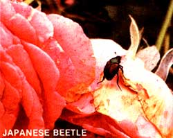

As waves of summer heat make the soil shimmer and drenching down pours release the fragrance of the earth, it's the season to pick bugs, pull weeds, cultivate the soil ... and look forward to the joys of the harvest.
There's a cornucopia of good news for home gardeners this month, and much of it concerns organic alternatives for insect and disease control. Take the catalog of Ringer Research (Dept. TMEN, 6860 Flying Cloud Dr., Eden Prairie, MN 55344), for example. In it you'll find such well-known products as Bacillus thuringiensis (BT or Dipel), a bacterial insecticide that's effective against caterpillars, and milky spore, a disease that colonizes and controls Japanese beetles.
But you'll find some less common items, too. A version of BT called BMC-more scientifically, Bacillus thuringiensis israeliensis - is offered as a safe, natural control for the larvae of black flies and mosquitoes, two pests that can really keep you out of the garden! The best thing about this special form of BT is that it has no effect on people, fish, or other creatures: It just kills larvae. (BMC is also available from Gurney's Seed & Nursery Co., Yankton, SD 57079.)
And then there's Seek, which provides effective control of root weevils, cutworms, Japanese beetles, some borers, and other insect pests. Operating much like BT, Seek (actually living Steinernematid nematodes) lies in wait in the soil for its enemies. Once contact is made, the garden-beneficial nematodes enter their victim and effect a kill in two days. In the process, the nematodes multiply and send out additional generations for long-lasting control. Half a pound treats 200 square feet and sells for about $13.
AND MORE . . .
Now that's really good news, you might say. What could be better? Well , try this: According to a report by Jerry Bishop in The Wall Street journal, a team of scientists working on interferon research has identified a chemical that-at least in laboratory tests-has proven to be a potent inhibitor of plant viruses. Bishop says, "If field experiments confirm laboratory experience, the chemical could be to plant virus diseases what penicillin is to human bacterial diseases."
Stop for a moment and cast your mind over some of the virus diseases that beset plants: tobacco mosaic (TMV) on such members of the nightshade family as tomatoes ... bean mosaic on legumes ... and anthracnose on virtually everything. In all, there are about 400 known viruses that affect plants, and the damage they do to commercial crops has been estimated at between 2 and 10% of the total yield. Anything that can begin to control such viruses will clearly be a boon to commercial agriculture ... and also to the home gardener. just think how often you've had to plant a disease-resistant hybrid in place of a more flavorful (but also more vulnerable) standard variety!
Jerry Bishop summed up the benefits of the new-synthesized compound called 2,5-A that is-in its natural form-produced when interferon comes in contact with animal cells: "Minute amounts of the chemical sprayed on a plant can stop a devastating virus infection in less than an hour. The chemical can be made fairly cheaply in large volume. More important, it is harmless to the plant ... and to humans and other animals."
2,5-A won't appear on the market for some time. Field testing for both safety and efficacy must be carried out before the product can be used in agriculture. (After all, not everything that initially appears "harmless" turns out to be so.) But scientists in Israel and West Germany are cooperating in the work done by researchers at Temple University Medical School in Philadelphia, and the promise of 2,5-A seems to grow monthly.
AND EVEN MORE!
The April edition of The Avant Gardener ($15 for 12 monthly issues from Horticultural Data Processors, Box 489, New York, NY 10028 ... and well worth it!) brings good news about a systemic fungicide that stimulates plants to develop their own natural defense mechanism against downy mildews and phytophthora. Called Aliette, the product is labeled for vegetables and fruits as a soil drench or foliar spray. It's available from E.C. Geiger, Box 285, Harleysville, PA 19438.
THE SECOND SEASON
When you're faced with harvesting the bumper crop from your first planting, it's sometimes difficult to turn your thoughts to a fall harvest. But this is the time to put out seedlings of such healthful, fiber rich vegetables as cabbage, cauliflower, broccoli, and brussels sprouts. (The garden calendar on page 180 of MOTHER NO. 70 gives full details about planting dates and suggests some cultivars.)
Last year, aided in large part by our drip irrigation system and black plastic mulch, my wife and I harvested broccoli well into December and brussels sprouts in January ... and we live in New York State! In all, I would have to rate the black-plastic-mulched/drip-irrigated garden I've been experimenting with as an unqualified success. (I first described it in "A Drip at a Time," MOTHER NO. 82, page 32.) It was a difficult growing year, with heavy rain all spring and then weeks without a shower in the summer, but the black plastic cover kept the soil from getting sodden in excessively wet weather, while the drip system delivered moisture to the plants very efficiently during the extended dry spell.
Our garden is (of necessity) located in an area that was formerly a farmhouse garbage dump, and broken glass and clamshells still surface in the growing patch with dismaying regularity. Under these circumstances, I tried out the sturdy black plastic Submatic tubing (available from Submatic, P.O. Box 246, Lubbock, TX 79408) and found it to be better than the more fragile, paper like"oozing tape" from Irrigro (1555 Third Ave., Niagara Falls, NY 14304). The latter occasionally suffered cuts that required repair. Under more ordinary conditions, though, I think that both systems work well, with the Itrigro having a marginal advantage for row crops, since it weeps water along its entire length rather than from emitters placed at two foot intervals.
At any rate, I'm now a thoroughgoing convert to drip irrigation!
|
 |
|
|